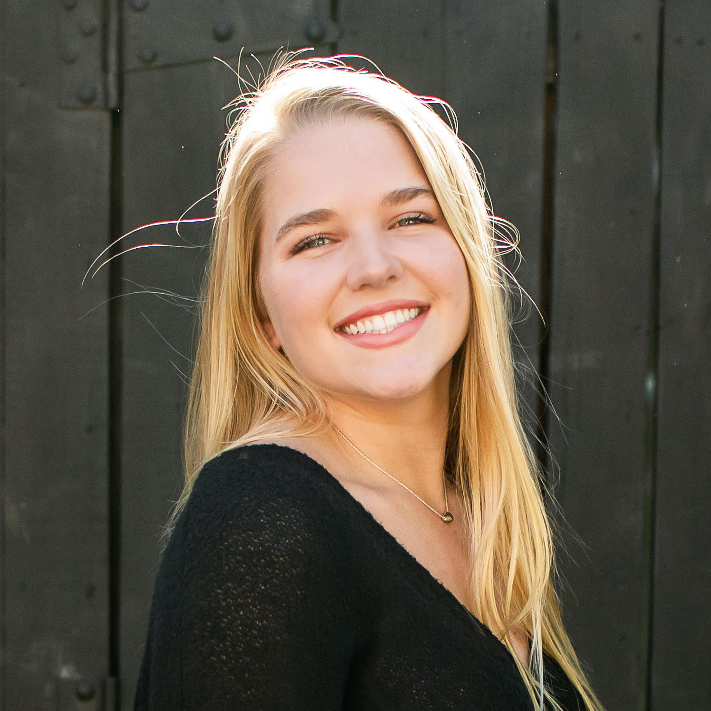

Our Mission
According to the American Association of University Women, only 28% of
the STEM workforce includes women, exemplifying the result of the confidence gap
between genders in regard to STEM abilities beginning and persisting throughout
ones life.
STEM Sisters aims to bridge this gender divide by motivating and
empowering female identifying youth to pursue their interest in STEM fields.
Through engaging activities provided to young students as well as mentorship
opportunities with accomplished women in STEM, our organization is contributing
to building the upcoming generation of female leaders in science and mathematics.
In a society where gender inequality persists and young women are dissuaded from
pursuing STEM fields as a result of their masculine association, STEM Sister serves
an integral role in bridging the gender divide by motivating female youth to strive
towards their STEM interests.
Co-President
Maya Groff
Meet Maya Groff! Maya is one of our presidents who hails from Pittsburgh, PA. Maya is a Chemistry major with minors in Creative Writing
and Health, Literature, and Culture.
Co-President
Tessa Buscher
Meet Tessa Buscher! She is one of our presidents and comes from Fuquay Varina, NC. Tessa is a Biology and Disability Studies double major.

Vice President
Mason Murray
Meet Mason Murray! She is our Vice President from Asheville, NC. Mason is a Biology major with minors in Chemistry and Anthropology.
Speaker Outreach Chair
Sophia Lin
Meet Sophia Lin! Sophia is our Speaker Outreach Chair. She double majors in Biostatistics and Computer Science.
Social Chair
Emma Tyler
Meet Emma Tyler! She is our Social Chair and is from Austin, TX. She is majoring in Neuroscience.
Treasurer
McKinley Windram
Meet McKinley Windram! She is a Chapel Hill native who is majoring in Neuroscience and minoring in Spanish.
Community Outreach Chair
Marisa Romanat
Meet Marisa Romanat! She is our Community Outreach Chair. Marisa is from Charlotte, NC and is double majoring in Psychology and Religious Studies.